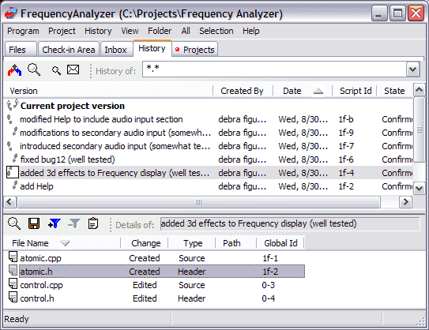

The History tab shows the repository of all check-ins (scripts), whether done by you or other project members, in the order in which they were applied to the project.
Each script listing shows additional details including who made the change, when it was made, and the state of the script.
In order to understand various script states, here's the glossary of terms used in the "State" column of the History display
In many case a script becomes overdue because some project members
stopped responding to scripts. You should notify the administrator of the project
about such "dead souls." The administrator should either remove those members from
the project or change their status to Observer.
The Details pane at the bottom shows all the files affected by a particular script. From within this pane you can:
It is from within the History tab that you can do any of the following: